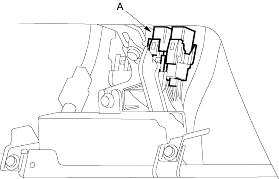
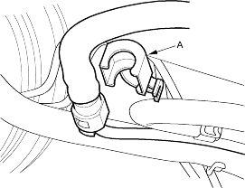
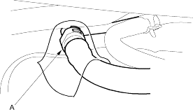
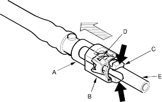

Before disconnecting fuel pipes or hoses, relieve pressure from the system by disconnecting the fuel tube/quick connect fitting in the engine compartment.
- Make sure you have the anti-theft code for the radio, then write down the frequencies for the radio's preset buttons.
- Turn the ignition switch OFF.
- Remove the glove box, refer to the '01 Civic Shop Manual on this CD (see page 20-220), then remove the PGM-Fl main relay 2 (A).

- Start the engine and let it idle until it stalls.
NOTE: The DTCs or Temporary DTCs P0301, P0302, P0303, P0304 may come on during this procedure. If any DTCs are stored, ignore them.
- Turn the ignition switch OFF.
- Remove the fuel fill cap and relieve fuel pressure in the fuel tank.
- Disconnect the negative cable from the battery.
- Remove the quick-connect fitting cover (A).

- Check the fuel quick-connect fitting for dirt and clean if necessary.
- Place a rag or shop towel over the quick-connect fitting (A).

- Disconnect the quick-connect fitting (A): Hold the connector (B) with one hand and squeeze the retainer tabs (C) with the other hand to release them from the locking pawls (D). Pull the connector off.
NOTE:
- Prevent the remaining fuel in the fuel feed pipe or hose from flowing out with a rag or shop towel.
- Be careful not to damage the pipe (E) or other parts.
- Do not use tools.
- If the connector does not move, keep the retainer tabs pressed down and alternately pull and push the connector until it comes off easily.
- Do not remove the retainer from the pipe; once removed, the retainer must be replaced with a new one.

- After disconnecting the quick-connect fitting, check it for dirt or damage, refer to the '01 Civic Shop Manual on this CD (see step 4 on page 11-435).